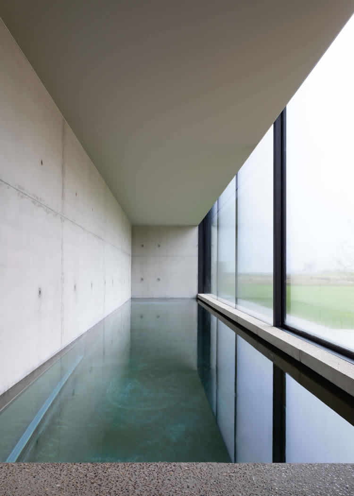

¡Hola!
Estás en la página web de Barrientos Asociados, un estudio de arquitectura con un equipo apasionado y comprometido con la excelencia en cada proyecto. En Barrientos Asociados, la arquitectura es más que un trabajo, es una forma de vida, y están comprometidos con llevar los sueños de sus clientes a la realidad.
Su equipo está formadopor ingenieros civiles y arquitectos, que combinan la experiencia y la juventud para crear diseños únicos y adaptados a las necesidades y deseos de sus clientes. Cada proyecto es tratado con dedicación y pasión, desde la concepción hasta la entrega final.
En esta página web, encontrarás más información sobre sus proyectos y servicios. Si estás buscando un equipo apasionado y comprometido con la excelencia para llevar a cabo tu proyecto de arquitectura, ¡Barrientos Asociados es una excelente opción!
La arquitectura es la poesía hecha espacio, donde el diseño y la construcción se entrelazan para dar forma a lugares donde la vida se desenvuelve. Es el arte de crear ambientes que se funden con su entorno, que acogen el cuerpo humano y lo envuelven en una atmósfera que estimula los sentidos. Los espacios diseñados con esmero y dedicación son como un tejido vivo que respira junto con las personas que los habitan, y se convierten en un reflejo de su estilo de vida, su identidad y sus sueños.
En nuestra empresa, empleamos estos conceptos para diseñar. Estamos comprometidos en crear espacios que reflejen la vida de las personas, lugares que se adapten a sus necesidades y que les brinden una experiencia única. Nos esforzamos por combinar la funcionalidad y la belleza en cada proyecto, y trabajamos con dedicación y pasión para lograr la satisfacción total de nuestros clientes.

La arquitectura es un sueño donde se pueden imaginar cosas impresionantes, pero no sería posible sin la ayuda de la ingeniería, que logra hacer los cálculos más precisos y llevar esos sueños a la realidad. Esto es lo que nos permite construir edificios seguros y duraderos que inspiran confianza.
En nuestro equipo, combinamos la creatividad y la innovación de la arquitectura con la precisión y la eficiencia de la ingeniería para crear soluciones integrales para nuestros clientes. Creemos que la colaboración es clave para lograr resultados excepcionales y estamos comprometidos a trabajar contigo en cada paso del camino.
Esperamos poder ayudarte a hacer tus sueños realidad. Contáctanos para conocer más sobre nuestros servicios y cómo podemos trabajar juntos.